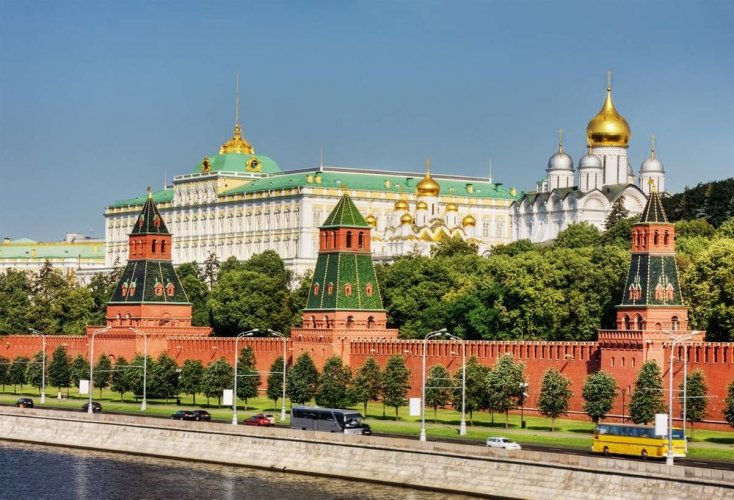

Kremlin (Russian: Кремль): A Russian word meaning castle or fortress. Today, this word is used to refer to the old center of Moscow with its buildings,
which is surrounded by a huge wall two and a half miles long and 65 feet high. The Moscow Kremlin is located on Borovitsky Hill, on the left side of the Moskva River,
where the Niglinaya River flows. It is about 25 meters high.
The Kremlin Campus is one of the most famous tourist places in Russia.
It is a complex of luxurious historical palaces that were the seat of an ancient Russian ruler and have been converted in our time into a number of museums.

These museums are located in the heart of Moscow, facing the Red Square in Moscow and a number of commercial markets,
with the highest peak more than 25 meters high. Going back a little, we find that the Kremlin is more than 500 years old,
as it was built in the late fifteenth century by order of the Russian Tsar Ivan III, who ruled the Soviet Empire.
red square
Red Square or "Red Square" is one of the most famous historical sites not only in Moscow, but in Russia in general;
Because it contains archaeological buildings and tourist attractions included in the UNESCO World Heritage List,
and a witness to the beauty and splendor of Russian architecture,
and historical events that have shaped the conscience of the Russian people since the fifteenth century until now.
The square is rectangular in shape on an area of 46,450 square meters; It is 330 meters long and 70 meters wide, on the eastern side of the Kremlin,
and in the heart of Moscow, where it connects to the main streets of Moscow from all sides.
It overlooks from the west the eastern wall of the Kremlin complex, and from the south is the Cathedral of St.
Basil, and to the east is the “Gome” store, and to the north is the Historical Museum, and a legend revolves around it that makes it a tourist attraction;
It is believed that it has the ability to fulfill dreams and wishes by scattering some coins in the air while repeating the wish that a person wants to achieve.
lina columns
Lena Pillars are tall columnar rock formations resembling columns, and the origin of their name is associated with the Lena River,
along which these rock formations extend for a distance of 40 km, located only 180 km from the city of Yakutsk in the Republic of Sakha (Yakutia),
near the town of Pokrovsk in the Far East of Russia where There are amazing geological formations, and about 5,000 km from the Russian capital, Moscow,
Lena Pillars are one of the most amazing places on the planet.
Each layer of Lena Pillars preserves the history of the continent and the entire planet.
The pictures show what lies in the immense beauty of these rocks, the majestic nature of Siberia, and they appear as a fence,
formed more than 500 million years ago, standing densely with each other, reaching a height of 220 meters above river level,
in 2012 the Lena columns were included in the list UNESCO World Heritage.
Solovetsky Islands
The Solovetsky Islands (often referred to as Solovki) are six islands located in the waters of the White Sea in northern Russia.
It is located only 165 km from the Arctic Circle. Founded in the 15th century,
Solovetsky Monastery was one of the most famous and sacred monasteries in Russia, and has become a major pilgrimage destination.
It was also a place of exile, and in the 20th century it was used as a brutal Soviet prison camp in which over a million prisoners died.
Soviet leaders in the 1920s saw the islands' isolation and stark climate differently and turned the archipelago into one of the country's first gulags.
Still haunted by the shadows of victims who struggled with their political views in both imperial and Soviet times,
yet its ancient monastery gives the place a unique air of spirituality.
The monastery was rehabilitated after the fall of the Soviet Union, and today the islands' natural beauty,
spiritual significance and heavy history attract tourists of all kinds to its shores. During World War II, the Solovetsky Islands were used as a naval base.
The monastery reopened in the early 1990s and is once again home to a few monks.
Many churches and other monastery buildings are still under renovation.
white stone traces
You can hear the stories of historians and architects about Russian stone architecture.
Especially among all areas stands the architecture of Vladimir-Suzdal. This is not at all surprising,
since many cultural monuments that can be seen in our time have been preserved in these places.
The white stone monuments of Vladimir and Suzdal are impressive and amazed many generations of people.
The article will discuss many objects of this architectural direction, we will get acquainted with their history, appearance and many other things.
To begin, it is useful to talk about the term "white stone monuments of Vladimir and Suzdal"
. Oddly enough, it's not just naming all the architectural things of these places.
It is included in the UNESCO World Heritage List. 8 ancient monuments of architecture belong to this term at one time.
All of them are located in the Vladimir region.
In order to understand how this particular style of architecture was formed, you should turn to history.